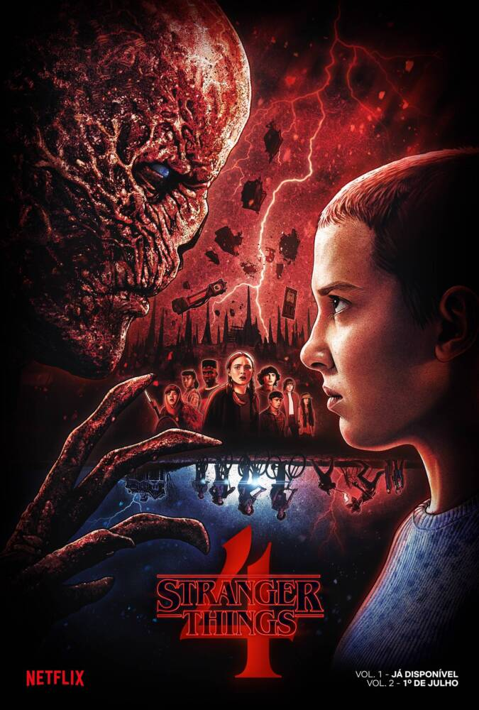
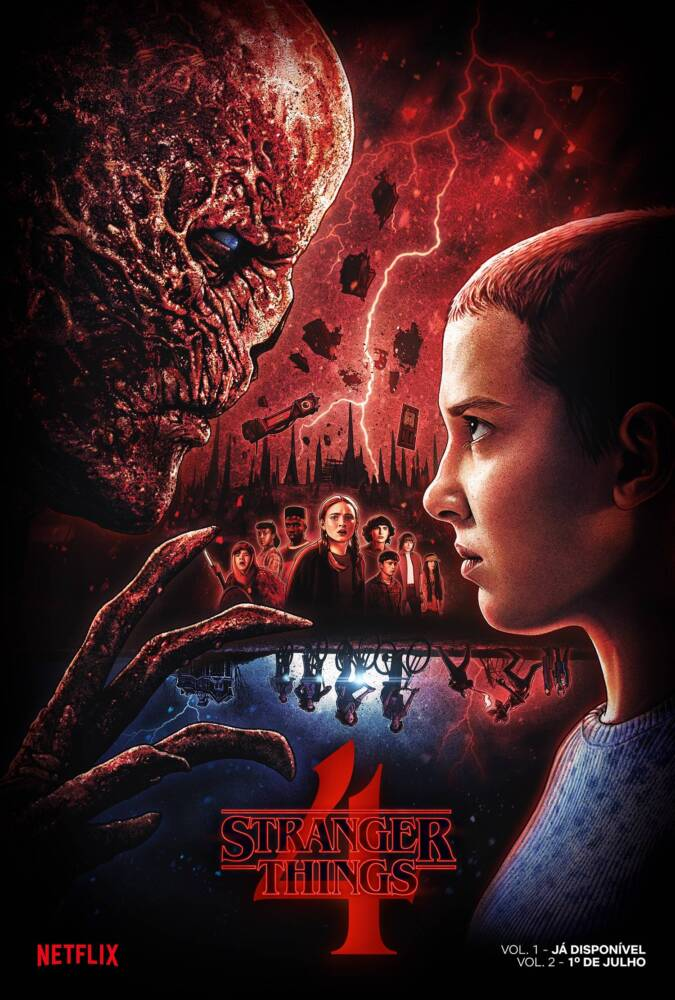
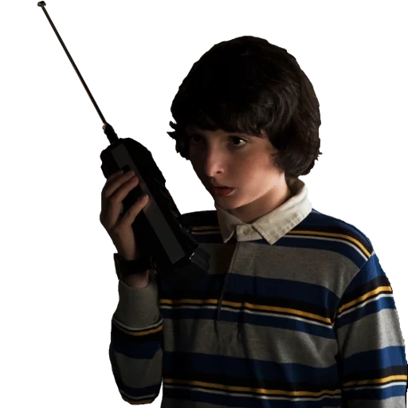
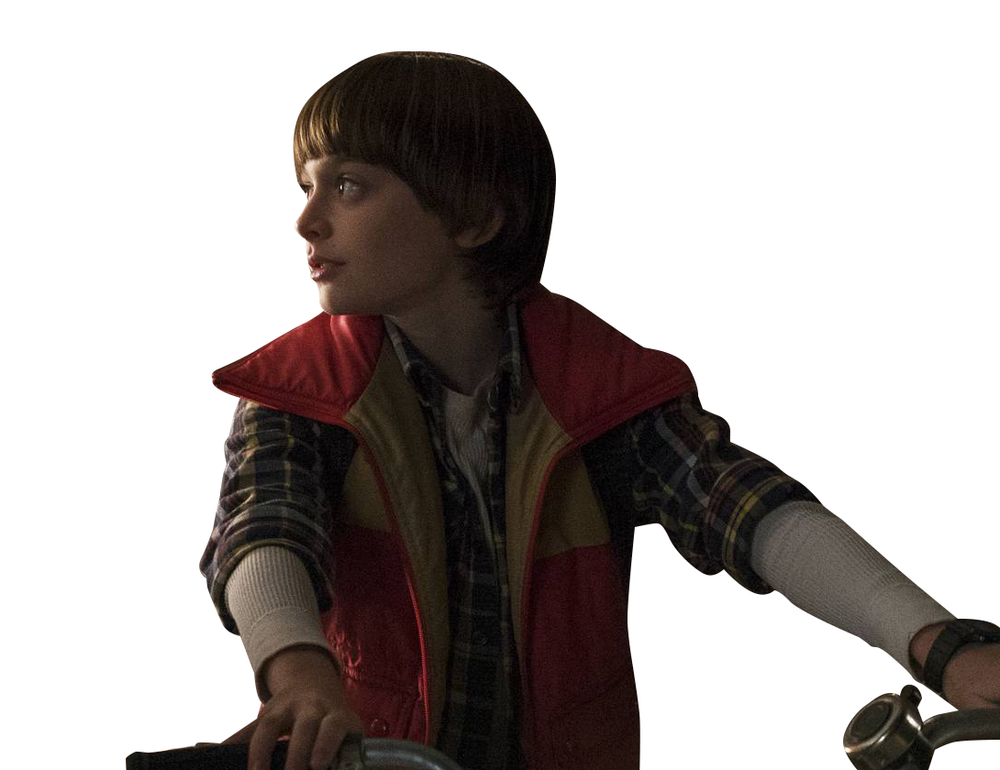
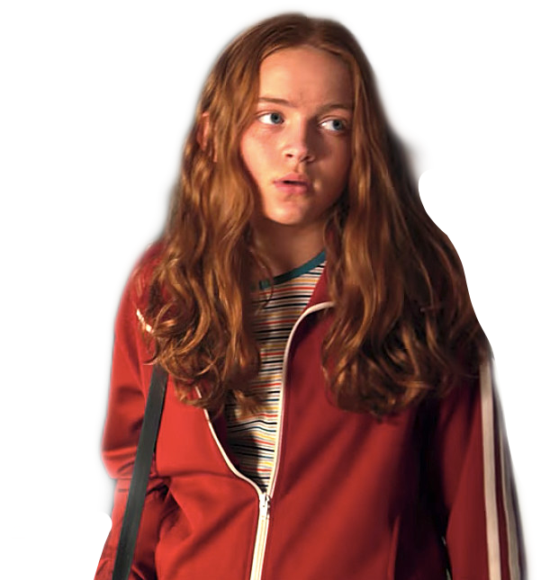
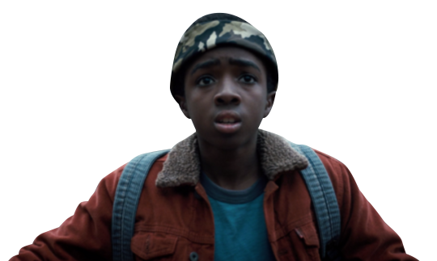
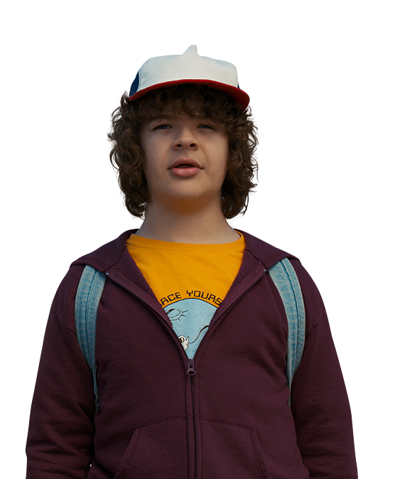

Olá, Queridos Strangers !
Neste espaço, vocês irão ver e entender melhor essa série maravilhosa 'Stranger Things', conhecer um pouco sobre os personagens e descobrir a história que está por trás. E, para fechar com chave de ouro, verão algumas músicas incríveis que fazem parte da experiência divertida e cheia de aventura que é assistir e compartilhar essa série.
 

Stranger Things? O que é isso?
"Stranger Things" é uma série amada por muitos, com toda certeza! Realizada pelos irmãos Matt e Ross Duffer para a plataforma Netflix, lançada no dia 15 de julho de 2016. Ela foi inspirada em uma teoria da conspiração sobre o governo dos Estados Unidos: o Projeto Montauk. Nesse projeto, ocorreram experimentos na cidade, além de técnicas psiquiátricas que envolviam teorias sobre pensamentos fora do comum relacionados a crianças e adolescentes. Levando em consideração que tudo isso é apenas uma teoria, não sabemos se realmente foi real, mas existem alguns boatos sobre o acontecimento, especialmente na década de 80.
A série começa em 1983, com quatro garotos: Mike, Lucas, Will e Dustin, na cidade de Hawkins localizada no Estado de Indiana nos Estados Unidos , jogando Dungeons and Dragons, um elemento central, onde trazem referências do jogo e complementam a história com terror, ação e aventura. A partir disso, um desaparecimento do garoto Will Byers (protagonizado pelo ator Noah Schnapp), com isso, todos preocupados resolvem investigar, e no meio dessa investigação se deparam com uma garota (protagonizada por Millie Bobby Brown) tatuado em seu pulso com o numero Eleven traduzindo para o português Onze onde acabam chamando ela por esse nome durante as temporadas. Muito diferente das outras garotas, descobrem o seu passado assustador e conturbado. Envolvendo seu poder da mente conhecido como telecinese, no qual, tudo se interliga com o laboratório de Hawkins. Onde eles acabam abrindo as portas do nosso Mundo para os monstros do Mundo invertido. E ao longo das temporadas as personagens acabam virando amigos melhores amigos incluindo a Max que se envolve a partir da segunda temporada e se aprofunda cada vez mais nesse mistério ao longo das 4 temporadas com todos eles.Tendo a última lançada em 27 de maio de 2022 com os últimos dois episódios lançados em 1° de julho de 2022. Em cada uma delas, tratando o desenvolvimento em épocas diferentes, mostrando a evolução deles real trazendo vários aspectos como: Amor, Amizade, Família, brigas e até mesmo perdas. É realmente uma série em tanto! tendo uma boa audiência e mais de 95% das pessoas com comentários e uma boa perspectiva sobre a série! E aí? Gostou de saber um pouco sobre? Então vale a pena assistir e descobrir ainda mais sobre essa maravilhosa história!!
Personagens principais
Onze
Conhecida como a garota dos poderes! Ou "Friends don't lie"
Mike
Boca suja!
Will
Só quer jogar D&D
Max
A pertubada do grupo
Lucas
Só anda com estilingue
Duntin
Bangela!
Melhores musicas
Além de ter efeitos especiais maravilhosos, eles trazem também a essência dos anos 80 trazendo algumas músicas maravilhosas, melhorando ainda mais a experiência que é assistir e fazer parte dessa comunidade! Algumas delas são:
1. "Should I Stay or Should I Go" - The Clash
2. "Time After Time" - Cyndi Lauper
3. "Every Breath You Take" - The Police
7. "Running Up That Hill (A Deal with God)" - Kate Bush
Essas músicas não só trazem nostalgia, mas também ajudam a contar a história de forma emocionante!"